音频围绕清华大学计算机系在教学中面临的 AI 影响、操作系统教学与科研变革以及相关教学实践探索等内容展开，具体内容如下：
陈渝最珍贵的是把镜头对准了教育的「塌方」：清华计算机大三超难课到课率不足 1/3、用 AI 做项目的学生成果达研究生水平但自身能力下降、平均分更低。这组诚实到刺痛的观察，是全天对「AI 让学习更好」乐观叙事最有力的反证，也是他转向「AI for OS / OS for AI」教学改革的动因。
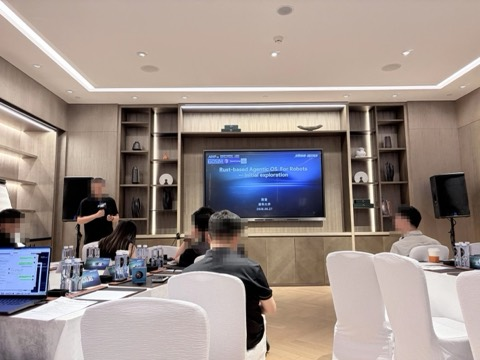
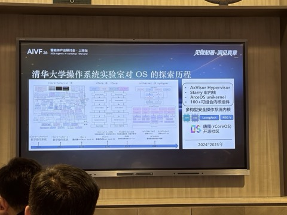
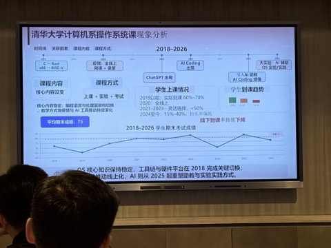
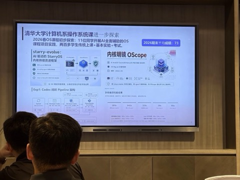
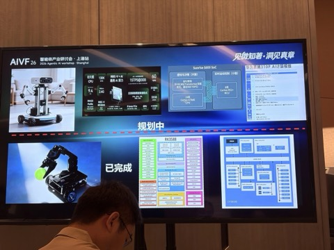
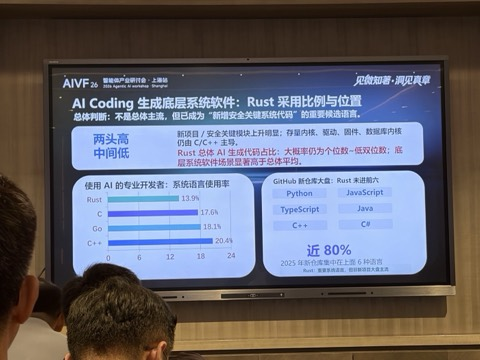
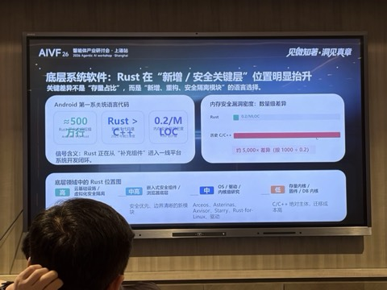
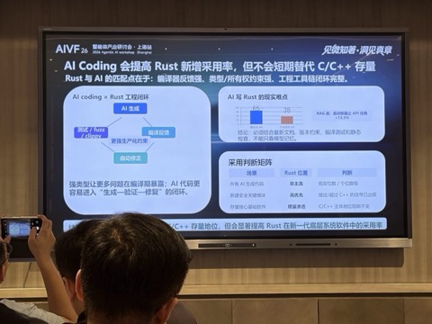
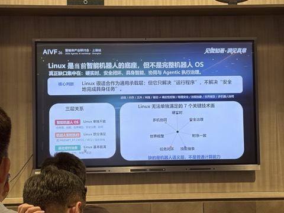
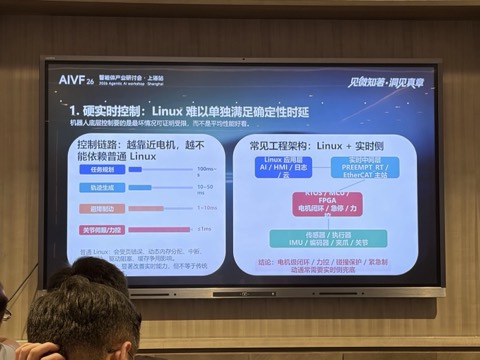
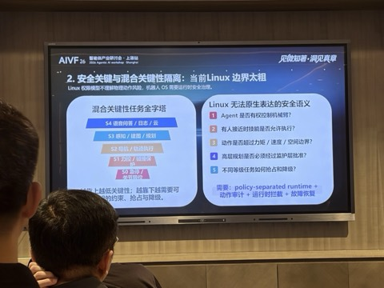
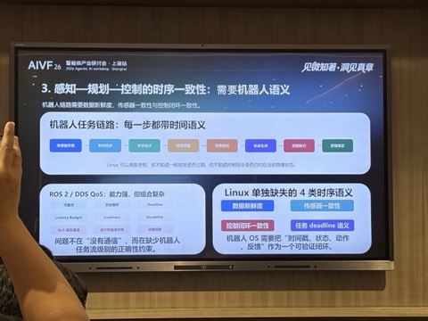
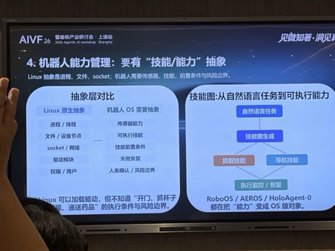
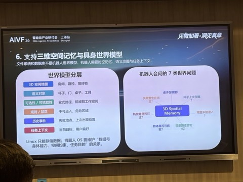
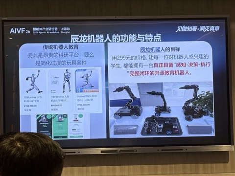
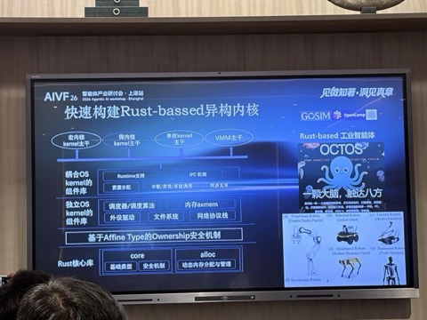
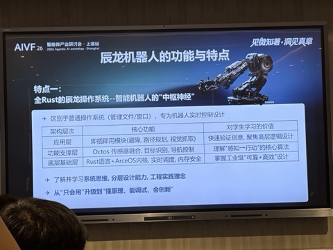
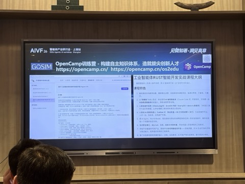